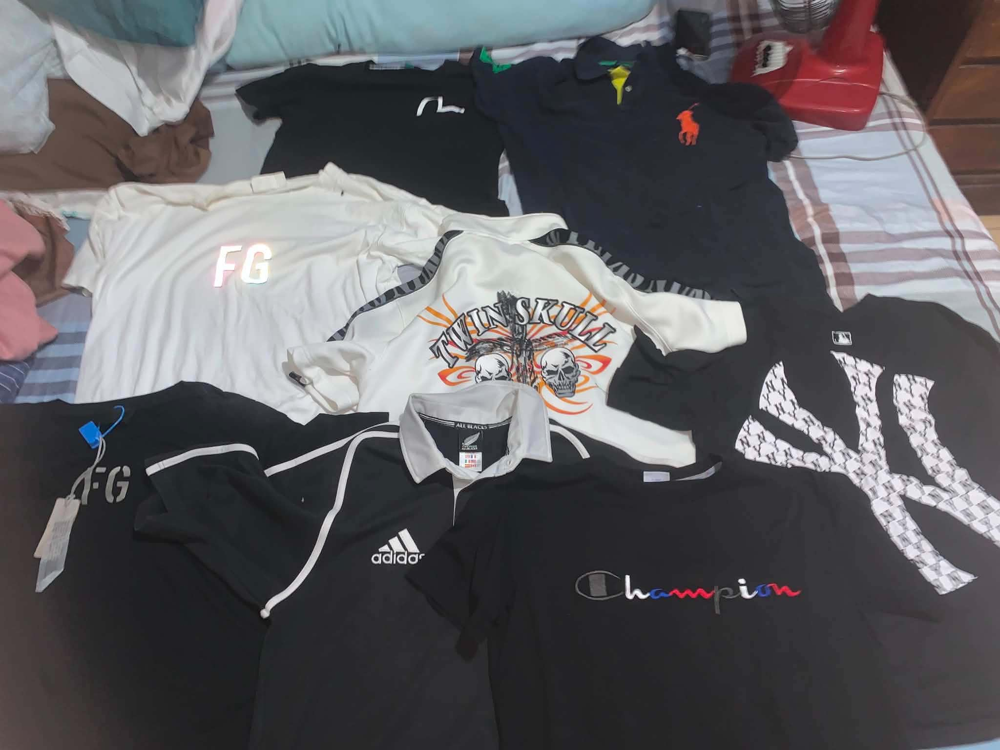

My name is Kenjie Von M. Culanag.
I am a student currently taking BSIT.
I am from Oslob, Cebu.
I am interested in technology, gaming, fashion, and different things that allow me to be creative.

Thrifting is one of the things I enjoy because I like looking for clothes and other items that I find interesting. I enjoy finding something that fits my style without always having to spend a lot of money. Sometimes, I also buy items that I think other people might like and sell them. For me, thrifting is not only about buying clothes. I also enjoy the process of searching, choosing, and finding something that feels worth buying. It has also helped me become more interested in fashion and in finding my own style.
Mobile Legends is another hobby that I enjoy during my free time. I usually play because it gives me something fun to do, especially when I want to relax or spend time with my friends. I enjoy learning different heroes, trying different strategies, and playing different types of matches. Sometimes the games can be frustrating, especially when things do not go as planned, but winning a difficult game makes the experience more enjoyable. Playing with friends also makes the game more fun because we can communicate, work together, and make funny memories while playing.
One of my goals is to finish my studies and continue improving myself. I also want to improve my skills in technology and coding because they are important for my future career.
I am a simple person who enjoys doing things at my own pace. I like spending time with people I am comfortable with, learning new things, and enjoying my hobbies when I have free time.